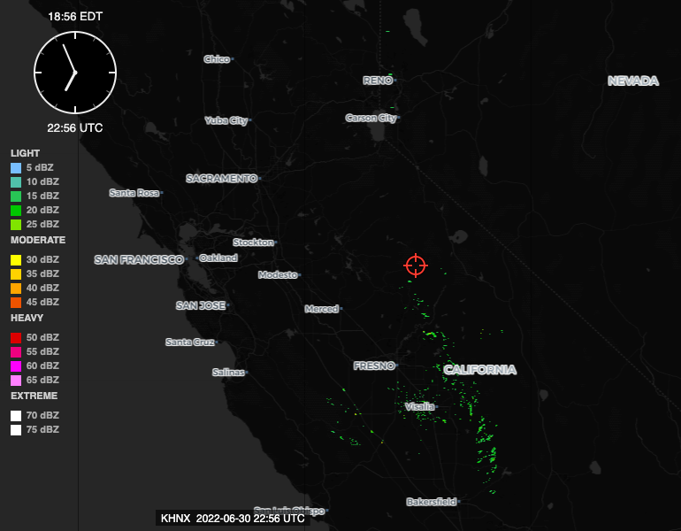
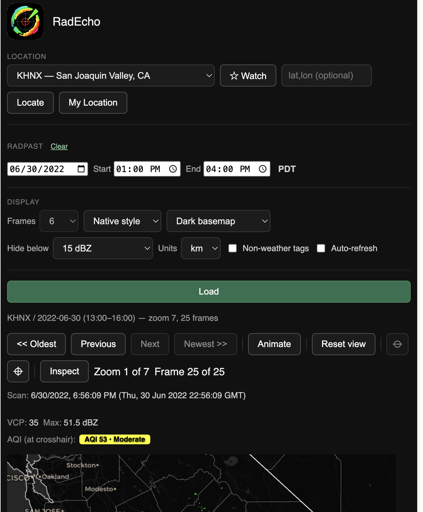

Historical Review
Load an exact past date and local time window for any station — a real calendar date picker and a local-time range, both opt-in. Nothing about current weather changes.
What's new
RadEcho can now load radar for a specific past date and a specific local time window, at any station — a real calendar picker instead of a list of dates already viewed, and start/end time fields in the station's own local time instead of UTC. Pick a date, type a start and end time, and RadEcho loads every volume in that window in one request.

Off by default — this is the important part
If you don't touch the date or time fields, RadEcho behaves exactly as it always has: current weather, live. A blank date means live, not "some ambiguous default date." Historical review is something you opt into by filling in a date and a time window — it never activates on its own, and it never changes what a plain station load shows.
How it works
The date and time fields live in their own RadPast section, separate from the station picker above it and the display options below — pick a station, pick a date on the calendar, and set a start and end time. Those times are in the station's own local time zone — a small badge next to the fields shows which one (PDT, EDT, MST, whatever applies), so a time you type for a California station means Pacific time regardless of where you happen to be sitting. RadEcho converts that to the correct UTC instant behind the scenes, including the correct offset across a daylight-saving transition, and loads every radar volume in that window.

A local time range is capped at three hours per load — long enough to cover a real event without asking the server to render an unbounded number of volumes in one request. A date picked with no start or end time still works the old way: RadEcho shows the tail end of that day, same as before this feature existed. The Frames selector under Display only means something in that mode — once a real time range is set, it determines the frame count on its own, so the selector greys out rather than showing a number that no longer applies.
Every setting — station, date, local start and end time — is captured in the page's URL. A link built from a loaded view reproduces that exact view for anyone who opens it, no re-entering anything.
What it's for
Looking back at what the radar actually showed during a specific past event — a storm you remember, an afternoon you were somewhere and want to know what was overhead, a date worth double-checking against your own memory of what happened. RadEcho's archive goes back years, and this is the difference between knowing that and actually being able to look.
Comments
Sign in with GitHub to comment. Threads live in this repository's Discussions.